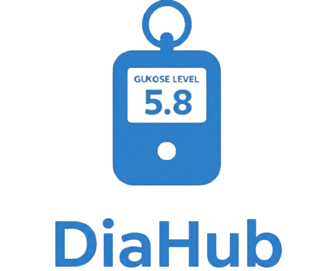
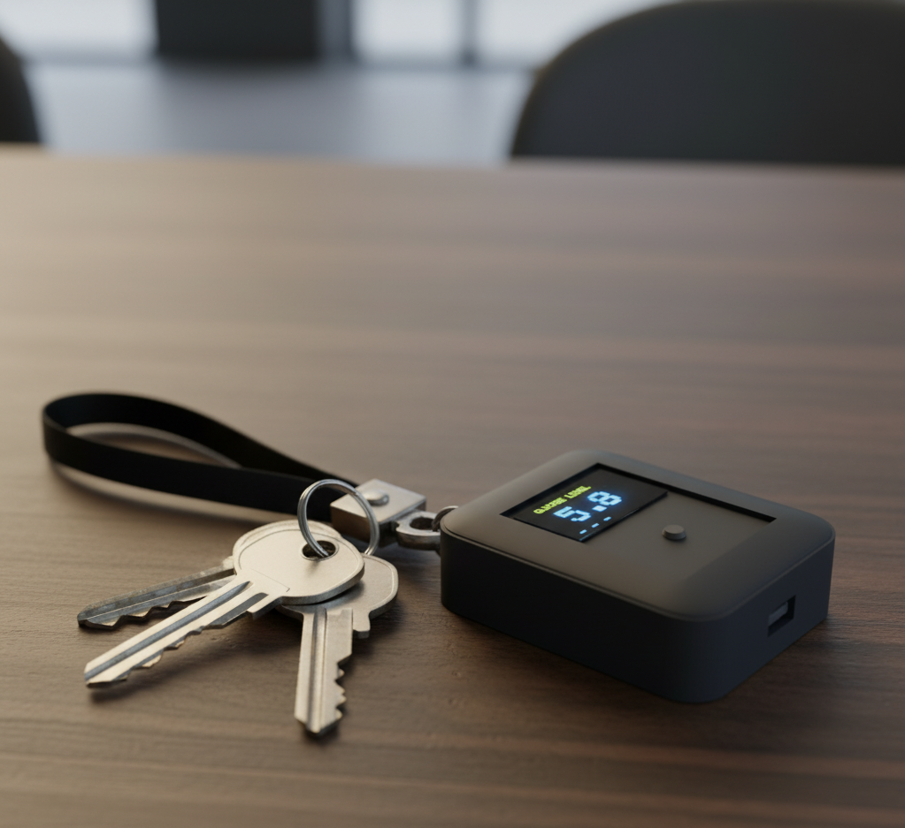
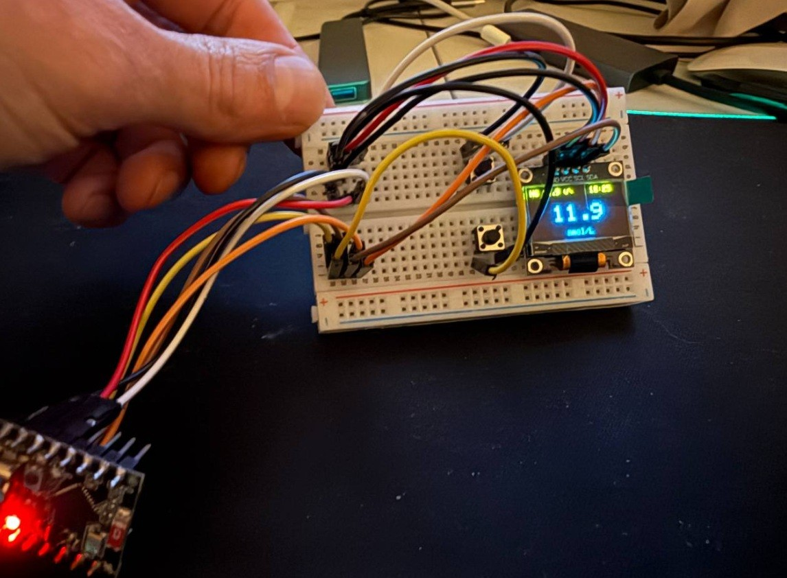

For everyday life
Quick, distraction-free awareness without reaching for a second screen.

DiaHubDiaHub is a compact keychain-sized hub that shows glucose from compatible data sources in real time. No phone needed. No app required. Just glance and know.

Built in Denmark for people with diabetes, parents, and caregivers who need simple and reliable glucose visibility.
Quick, distraction-free awareness without reaching for a second screen.
A direct, always-available object that reduces the stress of checking through layers of apps.
Compact hardware that is easy to carry, easy to use, and ready in seconds.
Charging, school, meetings, sleep, and daily movement can all delay access to glucose data.
They can be expensive, short on battery, and not ideal for every age or routine.
One purpose, one screen, one quick check when time and clarity matter most.
Get immediate glucose visibility without opening multiple apps.
Reduce stress with a straightforward way to check levels quickly.
Stay informed with a simple, portable object that is always nearby.
A practical add-on concept focused on ease of use and everyday adherence.
DiaHub starts with Wi-Fi onboarding and connects to a compatible glucose data source.
Keep it on your keychain so glucose visibility is always close at hand.
Read glucose instantly in one glance, with room for trends and alerts.
In 2021, after pancreatic surgery, I was diagnosed with type 1 diabetes. Like many people at the beginning of this journey, I often missed critical glucose data, which can lead to serious consequences.
Using my programming background and interest in electronics design, I built an ESP32 breadboard prototype. It still sits on my desk today, showing glucose in real time and reminding me about insulin and urgent snacks when glucose drops.
That prototype became the foundation for DiaHub - a full product idea aimed at helping millions of people with diabetes. Wishing good health to everyone reading this! :)
First ESP32 breadboard prototype

A compact connected keychain display designed to show glucose information at a glance.
People living with diabetes, parents, caregivers, and anyone who benefits from easier visibility.
No. DiaHub is a non-medical accessory for visibility and does not replace medical advice or diagnosis.
Through a simple Wi-Fi setup to compatible glucose data sources.
If you want updates, early-access details, or partnership dialogue, contact us and we will get back to you.